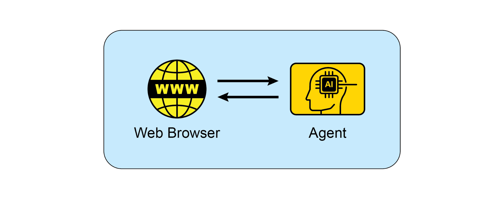

读书 · Agentic Design Patterns · 中英对照
附录 · 附录B - AI 智能体交互 AI Agentic Interactions：从 GUI 到真实世界
Appendix B - AI Agentic Interactions:: Appendix B · 《Agentic Design Patterns》 · Antonio Gulli · 2025
综述智能体如何通过视觉操控GUI、感知物理环境并与开发者对话式编程。
← 返回导读 原书 PDF 上一章:第100章 下一章:第102章
本章要点
① ACI让智能体像人一样看屏幕、识别元素并操作鼠标键盘 ① 多模态感知使智能体理解物理环境并实时对话 ① ChatGPT Agent等融合浏览、代码执行与第三方应用操作 ① Vibe Coding以对话迭代取代精确指令，聚焦目标而非实现
本章一图流
视觉操控GUI看屏幕识元素，模拟鼠标键盘→多模态感知理解物理环境，实时对话交互→融合应用操作浏览、代码与第三方应用打通→对话式编程Vibe Coding迭代，聚焦目标
智能体从视觉操控GUI到对话式编程，逐步融入真实世界。
原书插图

本章划线句
划线句(逐字校验)
"It must learn to "see" the screen not as a mere collection of pixels, but as a structured layout with interactive components"
为什么值得划线:点明GUI交互的核心：结构化理解而非像素识别
划线句(逐字校验)
"This moves beyond simple voice commands to a truly embodied understanding of the user's immediate physical context."
为什么值得划线:概括从语音命令到具身环境理解的关键跃迁
划线句(逐字校验)
"The developer focuses on the desired outcome (the "what") and leaves the implementation details (the "how") to the AI."
为什么值得划线:一句话定义Vibe Coding的分工本质
正文(英中对照)
"Appendix B - AI Agentic Interactions: From GUI to Real World environment AI agents are increasingly performing complex tasks by interacting with digital interfaces and the physical world. Their ability to perceive, process, and act within these varied environments is fundamentally transforming automation, human-computer interaction, and intelligent systems. This appendix explores how agents interact with computers and their environments, highlighting advancements and projects. Interaction: Agents with Computers The evolution of AI from conversational partners to active, task-oriented agents is being driven by Agent-Computer Interfaces (ACIs)."
附录 B - AI 智能体交互：从 GUI 到真实世界环境。AI 智能体（AI agents）正日益通过与数字界面和物理世界的交互来执行复杂任务。它们在各种环境中感知、处理和行动的能力，正在从根本上改变自动化、人机交互和智能系统。本附录探讨智能体如何与计算机及其环境交互，重点介绍相关进展与项目。交互：智能体与计算机。AI 正从对话伙伴演变为主动的、面向任务的智能体，这一演进由智能体-计算机接口（Agent-Computer Interfaces, ACI）推动。
导读注:点出 ACI 是 AI 从聊天走向任务执行的关键接口。
"These interfaces allow AI to interact directly with a computer's Graphical User Interface (GUI), enabling it to perceive and manipulate visual elements like icons and buttons just as a human would. This new method moves beyond the rigid, developer-dependent scripts of traditional automation that relied on APIs and system calls. By using the visual "front door" of software, AI can now automate complex digital tasks in a more flexible and powerful way, a process that involves several key stages: ● Visual Perception: The agent first captures a visual representation of the screen, essentially taking a screenshot. ● GUI Element Recognition: It then analyzes this image to distinguish between various GUI elements."
这些接口让 AI 能够直接与计算机的图形用户界面（Graphical User Interface, GUI）交互，使其能够像人类一样感知和操作图标、按钮等视觉元素。这种新方法超越了传统自动化中依赖 API 和系统调用的、僵化且依赖开发者的脚本。通过使用软件的视觉“前门”，AI 现在能够以更灵活、更强大的方式自动化复杂的数字任务，这一过程涉及几个关键阶段：● 视觉感知：智能体首先捕获屏幕的视觉表示，本质上是截取一张屏幕截图。● GUI 元素识别：随后分析该图像，以区分各种 GUI 元素。
导读注:GUI 智能体绕过 API，像人一样“看屏幕”操作软件，是自动化范式的关键转变。
"It must learn to "see" the screen not as a mere collection of pixels, but as a structured layout with interactive components, discerning a clickable "Submit" button from a static banner image or an editable text field from a simple label. ● Contextual Interpretation: The ACI module, acting as a bridge between the visual data and the agent's core intelligence (often a Large Language Model or LLM), interprets these elements within the context of the task. It understands that a magnifying glass icon typically means "search" or that a series of radio buttons represents a choice."
它必须学会将屏幕"看作"一个具有交互组件的结构化布局，而非仅仅是像素的集合，从而区分可点击的"提交"按钮与静态横幅图片，或可编辑文本字段与简单标签。上下文解释：ACI 模块作为视觉数据与智能体核心智能（通常是大型语言模型或 LLM）之间的桥梁，在任务上下文中解释这些元素。它理解放大镜图标通常意味着"搜索"，或一组单选按钮代表一种选择。
导读注:强调智能体需结构化理解界面，而非像素级识别，ACI 模块承担视觉与 LLM 间的语义桥梁。
"This module is crucial for enhancing the LLM's reasoning, allowing it to form a plan based on visual evidence. ● Dynamic Action and Response: The agent then programmatically controls the mouse and keyboard to execute its plan—clicking, typing, scrolling, and dragging. Critically, it must constantly monitor the screen for visual feedback, 1 dynamically responding to changes, loading screens, pop-up notifications, or errors to successfully navigate multi-step workflows. This technology is no longer theoretical."
该模块对于增强 LLM 的推理能力至关重要，使其能够基于视觉证据制定计划。● 动态动作与响应：随后，智能体以编程方式控制鼠标和键盘来执行其计划——点击、输入、滚动和拖拽。关键在于，它必须持续监控屏幕以获取视觉反馈，1 动态响应变化、加载界面、弹窗通知或错误，从而成功完成多步骤工作流。这项技术已不再是理论设想。
导读注:强调智能体需持续监控屏幕反馈以动态调整动作，技术已落地。
"Several leading AI labs have developed functional agents that demonstrate the power of GUI interaction: ChatGPT Operator (OpenAI): Envisioned as a digital partner, ChatGPT Operator is designed to automate tasks across a wide range of applications directly from the desktop. It understands on-screen elements, enabling it to perform actions like transferring data from a spreadsheet into a customer relationship management (CRM) platform, booking a complex travel itinerary across airline and hotel websites, or filling out detailed online forms without needing specialized API access for each service. This makes it a universally adaptable tool aimed at boosting both personal and enterprise productivity by taking over repetitive digital chores."
几家领先的 AI 实验室已开发出功能性 agent（智能体），展示了 GUI 交互的能力：ChatGPT Operator（OpenAI）：被设想为数字伙伴，ChatGPT Operator 旨在直接从桌面跨广泛应用程序自动化任务。它能理解屏幕上的元素，从而执行诸如将数据从电子表格传输到客户关系管理（CRM）平台、跨航空公司和酒店网站预订复杂的旅行行程，或填写详细的在线表单等操作，而无需为每项服务提供专门的 API 访问。这使其成为一种普遍适用的工具，旨在通过接管重复性的数字杂务来提升个人和企业生产力。
导读注:重点在 ChatGPT Operator 无需专用 API 即可跨应用操作，通用性是其核心卖点。
"Google Project Mariner: As a research prototype, Project Mariner operates as an agent within the Chrome browser (see Fig. 1). Its purpose is to understand a user's intent and autonomously carry out web-based tasks on their behalf. For example, a user could ask it to find three apartments for rent within a specific budget and neighborhood; Mariner would then navigate to real estate websites, apply the filters, browse the listings, and extract the relevant information into a document. This project represents Google's exploration into creating a truly helpful and "agentive" web experience where the browser actively works for the user."
Google Project Mariner：作为一个研究原型，Project Mariner 作为 Chrome 浏览器内的一个 agent（智能体）运行（见图 1）。其目的是理解用户意图，并代表用户自主执行基于网络的任务。例如，用户可以要求它在特定预算和街区范围内找到三套出租公寓；Mariner 随后会导航至房地产网站，应用筛选条件，浏览房源列表，并将相关信息提取到文档中。该项目代表了 Google 对创造真正有帮助且具有“agentive”（智能体化）网络体验的探索，即让浏览器主动为用户工作。
导读注:Google 的浏览器智能体原型，能自主完成找房等网页任务。
"Fig.1: Interaction between and Agent and the Web Browser 2 Anthropic's Computer Use: This feature empowers Anthropic's AI model, Claude, to become a direct user of a computer's desktop environment. By capturing screenshots to perceive the screen and programmatically controlling the mouse and keyboard, Claude can orchestrate workflows that span multiple, unconnected applications. A user could ask it to analyze data in a PDF report, open a spreadsheet application to perform calculations on that data, generate a chart, and then paste that chart into an email draft—a sequence of tasks that previously required constant human input. Browser Use: This is an open-source library that provides a high-level API for programmatic browser automation."
图1：Agent 与网页浏览器之间的交互 2 Anthropic 的 Computer Use（计算机使用）：该功能使 Anthropic 的 AI 模型 Claude 能够成为计算机桌面环境的直接使用者。通过截取屏幕截图来感知屏幕，并以编程方式控制鼠标和键盘，Claude 可以编排跨越多个互不连接的应用程序的工作流。用户可以要求它分析 PDF 报告中的数据、打开电子表格应用程序对该数据执行计算、生成图表，然后将该图表粘贴到电子邮件草稿中——这一系列任务此前需要持续的人工输入。Browser Use（浏览器使用）：这是一个开源库，提供用于程序化浏览器自动化的高层 API。
导读注:Computer Use 让 Claude 直接操作桌面，跨应用串联任务，是 Agent 落地的重要一步。
"It enables AI agents to interface with web pages by granting them access to and control over the Document Object Model (DOM). The API abstracts the intricate, low-level commands of browser control protocols, into a more simplified and intuitive set of functions. This allows an agent to perform complex sequences of actions, including data extraction from nested elements, form submissions, and automated navigation across multiple pages. As a result, the library facilitates the transformation of unstructured web data into a structured format that an AI agent can systematically process and utilize for analysis or decision-making."
它使 AI agent（智能体）能够通过授予其对文档对象模型（Document Object Model，DOM）的访问权和控制权，与网页进行交互。该 API 将浏览器控制协议中复杂、低层的命令抽象为一组更简化、更直观的函数。这使 agent 能够执行复杂的动作序列，包括从嵌套元素中提取数据、提交表单，以及跨多个页面进行自动导航。因此，该库有助于将非结构化网页数据转换为结构化格式，使 AI agent 能够系统地处理并利用这些数据进行分析或决策。
导读注:核心在于用 DOM 访问与控制把网页操作抽象成 agent 可调用的直观函数。
"Interaction: Agents with the Environment Beyond the confines of a computer screen, AI agents are increasingly designed to interact with complex, dynamic environments, often mirroring the real world. This requires sophisticated perception, reasoning, and actuation capabilities. Google's Project Astra is a prime example of an initiative pushing the boundaries of agent interaction with the environment. Astra aims to create a universal AI agent that is helpful in everyday life, leveraging multimodal inputs (sight, sound, voice) and outputs to understand and interact with the world contextually."
交互：智能体与环境 超越计算机屏幕的局限，AI 智能体正越来越多地被设计用于与复杂、动态的环境交互，这些环境往往映射现实世界。这需要复杂的感知、推理和行动能力。Google 的 Project Astra 是推动智能体与环境交互边界的典型举措。Astra 旨在创建一个在日常生活中有所帮助的通用 AI 智能体，利用多模态输入（视觉、声音、语音）和输出，以情境化的方式理解和交互世界。
导读注:Project Astra 展示多模态智能体如何超越屏幕，情境化地理解并交互现实世界。
"This project focuses on rapid understanding, reasoning, and response, allowing the agent to "see" and "hear" its surroundings through cameras and microphones and engage in natural conversation while providing real-time assistance. Astra's vision is an agent that can seamlessly assist users with tasks ranging from finding lost items to debugging code, by understanding the environment it observes. This moves beyond simple voice commands to a truly embodied understanding of the user's immediate physical context. Google's Gemini Live, transforms standard AI interactions into a fluid and dynamic conversation."
该项目聚焦于快速理解、推理与响应，使智能体能够通过摄像头和麦克风"看到"和"听到"周围环境，并在提供实时协助的同时进行自然对话。Astra 的愿景是打造一个智能体，通过理解其所观察到的环境，无缝协助用户完成从寻找失物到调试代码等各种任务。这超越了简单的语音指令，实现了对用户即时物理环境的真正具身化理解。Google 的 Gemini Live 将标准 AI 交互转变为流畅而动态的对话。
导读注:Astra 的核心在于具身化理解，让智能体从语音指令迈向对物理环境的实时感知与协助。
"Users can speak to the AI and receive responses in a natural-sounding voice with minimal delay, and can even interrupt or change topics mid-sentence, prompting the AI to adapt immediately. The interface expands beyond voice, allowing 3 users to incorporate visual information by using their phone's camera, sharing their screen, or uploading files for a more context-aware discussion. More advanced versions can even perceive a user's tone of voice and intelligently filter out irrelevant background noise to better understand the conversation. These capabilities combine to create rich interactions, such as receiving live instructions on a task by simply pointing a camera at it."
用户可以与 AI 对话，并以自然流畅的语音获得响应，延迟极小，甚至可以在句子中间打断或改变话题，促使 AI 立即适应。该界面不仅限于语音，还允许 3 位用户通过使用手机摄像头、共享屏幕或上传文件来融入视觉信息，从而进行更具上下文感知的讨论。更高级的版本甚至能感知用户的语调，并智能过滤无关的背景噪音，以更好地理解对话。这些能力结合起来创造了丰富的交互，例如只需将摄像头对准某项任务，就能获得实时指导。
导读注:多模态实时语音交互的关键在于低延迟与可打断，并融合视觉与语调理解。
"OpenAI's GPT-4o model is an alternative designed for "omni" interaction, meaning it can reason across voice, vision, and text. It processes these inputs with low latency that mirrors human response times, which allows for real-time conversations. For example, users can show the AI a live video feed to ask questions about what is happening, or use it for language translation. OpenAI provides developers with a "Realtime API" to build applications requiring low-latency, speech-to-speech interactions. OpenAI's ChatGPT Agent represents a significant architectural advancement over its predecessors, featuring an integrated framework of new capabilities."
OpenAI 的 GPT-4o 模型是一种为“omni”（全模态）交互设计的替代方案，意味着它能够跨语音、视觉和文本进行推理。它以低延迟处理这些输入，延迟水平可媲美人类响应时间，从而支持实时对话。例如，用户可以向 AI 展示实时视频流，询问正在发生的事情，或将其用于语言翻译。OpenAI 为开发者提供了“Realtime API”，用于构建需要低延迟、语音到语音交互的应用。OpenAI 的 ChatGPT Agent 相较前代是重大的架构进步，其特点是集成了新能力的统一框架。
导读注:GPT-4o 主打全模态低延迟交互，ChatGPT Agent 则强调架构升级。
"Its design incorporates several key functional modalities: the capacity for autonomous navigation of the live internet for real-time data extraction, the ability to dynamically generate and execute computational code for tasks like data analysis, and the functionality to interface directly with third-party software applications. The synthesis of these functions allows the agent to orchestrate and complete complex, sequential workflows from a singular user directive. It can therefore autonomously manage entire processes, such as performing market analysis and generating a corresponding presentation, or planning logistical arrangements and executing the necessary transactions."
其设计融合了若干关键功能模态：自主导航实时互联网以提取实时数据的能力、为数据分析等任务动态生成并执行计算代码的能力，以及直接与第三方软件应用对接的功能。这些功能的综合使该智能体（agent）能够依据单一用户指令编排并完成复杂的顺序工作流。因此，它可以自主管理整个流程，例如执行市场分析并生成相应的演示文稿，或规划物流安排并执行必要的交易。
导读注:核心在于多模态功能融合，使智能体凭单一指令自主完成端到端复杂工作流。
"In parallel with the launch, OpenAI has proactively addressed the emergent safety considerations inherent in such a system. An accompanying "System Card" delineates the potential operational hazards associated with an AI capable of performing actions online, acknowledging the new vectors for misuse. To mitigate these risks, the agent's architecture includes engineered safeguards, such as requiring explicit user authorization for certain classes of actions and deploying robust content filtering mechanisms. The company is now engaging its initial user base to further refine these safety protocols through a feedback-driven, iterative process."
在发布的同时，OpenAI 已主动应对此类系统固有的新兴安全考量。随附的“系统卡”（System Card）描述了具备在线执行操作能力的 AI 可能带来的运营危害，并承认了新的滥用途径。为缓解这些风险，该智能体的架构包含工程化防护措施，例如对某些类别的操作要求明确的用户授权，并部署稳健的内容过滤机制。公司目前正与其初始用户群体互动，通过反馈驱动的迭代流程进一步完善这些安全协议。
导读注:发布即配套系统卡，安全防护与用户反馈迭代并重。
"Seeing AI, a complimentary mobile application from Microsoft, empowers individuals who are blind or have low vision by offering real-time narration of their surroundings. The app leverages artificial intelligence through the device's camera to identify and describe various elements, including objects, text, and even people. Its core functionalities encompass reading documents, recognizing currency, identifying 4 products through barcodes, and describing scenes and colors. By providing enhanced access to visual information, Seeing AI ultimately fosters greater independence for visually impaired users. Anthropic's Claude 4 Series Anthropic's Claude 4 is another alternative with capabilities for advanced reasoning and analysis."
Seeing AI 是微软推出的一款免费移动应用，通过实时叙述周围环境，为盲人或低视力人士提供帮助。该应用借助设备摄像头，利用人工智能识别并描述各种元素，包括物体、文字甚至人物。其核心功能涵盖阅读文档、识别货币、通过条形码识别 4 种产品，以及描述场景和颜色。通过增强对视觉信息的获取，Seeing AI 最终帮助视障用户获得更大的独立性。Anthropic 的 Claude 4 系列 Anthropic 的 Claude 4 是另一个具备高级推理与分析能力的替代方案。
导读注:介绍 Seeing AI 的无障碍功能，并引出 Claude 4 作为替代方案。
"Though historically focused on text, Claude 4 includes robust vision capabilities, allowing it to process information from images, charts, and documents. The model is suited for handling complex, multi-step tasks and providing detailed analysis. While the real-time conversational aspect is not its primary focus compared to other models, its underlying intelligence is designed for building highly capable AI agents."
尽管 Claude 4 历史上专注于文本，但它包含强大的视觉能力，能够处理来自图像、图表和文档的信息。该模型适合处理复杂的多步骤任务并提供详细分析。虽然与其他模型相比，实时对话方面并非其主要焦点，但其底层智能旨在构建高度 capable 的 AI agents（智能体）。
导读注:Claude 4 虽以文本见长，但视觉能力与多步骤任务处理是其亮点。
"Vibe Coding: Intuitive Development with AI Beyond direct interaction with GUIs and the physical world, a new paradigm is emerging in how developers build software with AI: "vibe coding." This approach moves away from precise, step-by-step instructions and instead relies on a more intuitive, conversational, and iterative interaction between the developer and an AI coding assistant. The developer provides a high-level goal, a desired "vibe," or a general direction, and the AI generates code to match."
Vibe Coding：借助 AI 的直觉式开发。除了与 GUI 和物理世界的直接交互之外，开发者借助 AI 构建软件的方式正在涌现一种新范式："vibe coding"（氛围编程）。这种方法不再依赖精确的、逐步的指令，而是依靠开发者与 AI 编程助手之间更直觉、更对话式、更迭代的交互。开发者给出一个高层目标、一种期望的"氛围"或一个大致方向，AI 便生成与之匹配的代码。
导读注:提出"氛围编程"新范式：从精确指令转向直觉对话，开发者只给方向，AI 生成代码。
"This process is characterized by: - Conversational Prompts: Instead of writing detailed specifications, a developer might say, "Create a simple, modern-looking landing page for a new app," or, "Refactor this function to be more Pythonic and readable." The AI interprets the "vibe" of "modern" or "Pythonic" and generates the corresponding code. - Iterative Refinement: The initial output from the AI is often a starting point."
这一过程的特征是：- 对话式提示（Conversational Prompts）：开发者无需编写详细规格说明，而可以说“为一个新应用创建一个简洁、现代风格的落地页”，或“重构这个函数，使其更符合 Python 风格且更易读”。AI 会解读“现代”或“Python 风格”的“感觉”，并生成相应的代码。- 迭代式细化（Iterative Refinement）：AI 的初始输出往往只是一个起点。
导读注:对话式提示取代详细规格，AI 靠“感觉”生成代码，初始输出仅是起点。
"The developer then provides feedback in natural language, such as, "That's a good start, but can you make the buttons blue?" or, "Add some error handling to that." This back-and-forth continues until the code meets the developer's expectations. - Creative Partnership: In vibe coding, the AI acts as a creative partner, suggesting ideas and solutions that the developer may not have considered. This can accelerate the development process and lead to more innovative outcomes. - Focus on "What" not "How": The developer focuses on the desired outcome (the "what") and leaves the implementation details (the "how") to the AI."
随后，开发者用自然语言提供反馈，例如："这是个不错的开始，但你能把按钮做成蓝色的吗？"或者"给那段代码加一些错误处理。"这种来回往复会一直持续，直到代码满足开发者的预期。——创造性伙伴关系：在 vibe coding 中，AI 充当创造性伙伴，提出开发者可能未曾考虑过的想法和解决方案。这可以加速开发过程，并带来更具创新性的成果。——关注"做什么"而非"怎么做"：开发者专注于期望的结果（"做什么"），而把实现细节（"怎么做"）交给 AI。
导读注:点出 vibe coding 的三大特征：自然语言反馈循环、AI 作为创意伙伴、开发者只定目标不管实现。
"This 5 allows for rapid prototyping and exploration of different approaches without getting bogged down in boilerplate code. - Optional Memory Banks: To maintain context across longer interactions, developers can use "memory banks" to store key information, preferences, or constraints. For example, a developer might save a specific coding style or a set of project requirements to the AI's memory, ensuring that future code generations remain consistent with the established "vibe" without needing to repeat the instructions. Vibe coding is becoming increasingly popular with the rise of powerful AI models like GPT-4, Claude, and Gemini, which are integrated into development environments."
这 5 使得快速原型设计和探索不同方法成为可能，而不会陷入样板代码的泥潭。- 可选记忆库（Memory Banks）：为了在较长的交互中保持上下文，开发者可以使用“记忆库”来存储关键信息、偏好或约束。例如，开发者可以将特定的编码风格或一组项目需求保存到 AI 的记忆中，确保未来的代码生成与既定的“氛围”保持一致，而无需重复指令。随着 GPT-4、Claude 和 Gemini 等强大 AI 模型集成到开发环境中，Vibe coding 正变得越来越流行。
导读注:记忆库让 AI 记住编码风格与项目约束，避免重复指令。
"These tools are not just auto-completing code; they are actively participating in the creative process of software development, making it more accessible and efficient. This new way of working is changing the nature of software engineering, emphasizing creativity and high-level thinking over rote memorization of syntax and APIs."
这些工具不仅是在自动补全代码；它们正积极参与软件开发的创造性过程，使其更易获取、更高效。这种新的工作方式正在改变软件工程的性质，强调创造力和高层次思维，而非对语法和 API 的死记硬背。
导读注:点出 AI 编程工具正重塑软件工程本质：从记语法转向重创造。
"Key takeaways ● AI agents are evolving from simple automation to visually controlling software through graphical user interfaces, much like a human would. ● The next frontier is real-world interaction, with projects like Google's Astra using cameras and microphones to see, hear, and understand their physical surroundings. ● Leading technology companies are converging these digital and physical capabilities to create universal AI assistants that operate seamlessly across both domains. ● This shift is creating a new class of proactive, context-aware AI companions capable of assisting with a vast range of tasks in users' daily lives."
关键要点 ● AI agent（智能体）正从简单的自动化演进为通过图形用户界面以视觉方式控制软件，就像人类一样。 ● 下一个前沿是真实世界交互，Google 的 Astra 等项目利用摄像头和麦克风来看到、听到并理解其物理环境。 ● 领先的科技公司正在融合这些数字与物理能力，以打造在两大领域无缝运行的通用 AI 助手。 ● 这一转变正在催生一类新型的主动式、情境感知的 AI 伙伴，能够在用户日常生活中协助完成广泛的任务。
导读注:AI 智能体从屏幕走向现实世界，数字与物理能力融合是核心趋势。
"Conclusion Agents are undergoing a significant transformation, moving from basic automation to sophisticated interaction with both digital and physical environments. By leveraging visual perception to operate Graphical User Interfaces, these agents can now manipulate software just as a human would, bypassing the need for traditional APIs. Major technology labs are pioneering this space with agents capable of automating complex, multi-application workflows directly on a user's desktop."
结论：Agent 正在经历重大转变，从基础自动化迈向与数字及物理环境的高级交互。通过利用视觉感知来操作图形用户界面（Graphical User Interfaces），这些 Agent 现在能够像人类一样操作软件，绕过对传统 API 的需求。各大技术实验室正在这一领域开拓创新，其 Agent 能够直接在用户桌面上自动化复杂的多应用工作流。
导读注:点出 Agent 从自动化到视觉操作 GUI 的跃迁，绕过 API 是关键突破。
"Simultaneously, the next frontier is expanding into the physical world, with initiatives like Google's Project Astra using cameras and microphones to contextually engage with their surroundings. 6 These advanced systems are designed for multimodal, real-time understanding that mirrors human interaction. The ultimate vision is a convergence of these digital and physical capabilities, creating universal AI assistants that operate seamlessly across all of a user's environments. This evolution is also reshaping software creation itself through "vibe coding," a more intuitive and conversational partnership between developers and AI."
与此同时，下一个前沿正扩展到物理世界，谷歌的 Project Astra 等项目利用摄像头和麦克风与周围环境进行情境化互动。6 这些先进系统旨在实现多模态、实时理解，以模拟人类交互。终极愿景是这些数字与物理能力的融合，创造出能在用户所有环境中无缝运行的通用 AI 助手。这一演进也通过“vibe coding”重塑软件创作本身，即开发者与 AI 之间更直观、更具对话性的伙伴关系。
导读注:AI 从数字走向物理世界，通用助手与“vibe coding”正重塑交互与开发。
"This new method prioritizes high-level goals and creative intent, allowing developers to focus on the desired outcome rather than implementation details. This shift accelerates development and fosters innovation by treating AI as a creative partner. Ultimately, these advancements are paving the way for a new era of proactive, context-aware AI companions capable of assisting with a vast array of tasks in our daily lives."
这种新方法优先考虑高层目标和创造性意图，让开发者能够专注于期望的结果而非实现细节。这种转变将 AI 视为创意伙伴，从而加速开发并促进创新。最终，这些进展正在为 proactive、context-aware 的 AI 伙伴（AI companions）新时代铺平道路，这些伙伴能够在我们的日常生活中协助完成大量任务。
导读注:强调从实现细节转向目标导向，AI 作为创意伙伴是加速创新的关键。
参考文献 References
"1. Open AI Operator, https://openai.com/index/introducing-operator/ 2. Open AI ChatGPT Agent: https://openai.com/index/introducing-chatgpt-agent/ 3. Browser Use: https://docs.browser-use.com/introduction 4. Project Mariner, https://deepmind.google/models/project-mariner/ 5. Anthropic Computer use: https://docs.anthropic.com/en/docs/build-with-claude/computer-use 6. Project Astra, https://deepmind.google/models/project-astra/ 7. Gemini Live, https://gemini.google/overview/gemini-live/?hl=en 8. OpenAI's GPT-4, https://openai.com/index/gpt-4-research/ 9. Claude 4, https://www.anthropic.com/news/claude-4 7"
1. Open AI Operator，https://openai.com/index/introducing-operator/ 2. Open AI ChatGPT Agent：https://openai.com/index/introducing-chatgpt-agent/ 3. Browser Use：https://docs.browser-use.com/introduction 4. Project Mariner，https://deepmind.google/models/project-mariner/ 5. Anthropic Computer use：https://docs.anthropic.com/en/docs/build-with-claude/computer-use 6. Project Astra，https://deepmind.google/models/project-astra/ 7. Gemini Live，https://gemini.google/overview/gemini-live/?hl=en 8. OpenAI 的 GPT-4，https://openai.com/index/gpt-4-research/ 9. Claude 4，https://www.anthropic.com/news/claude-4 7
导读注:资源清单：汇总 Operator、Computer use 等智能体与浏览器操作相关链接。
来源与用途
《Agentic Design Patterns》,Antonio Gulli · 2025 · 原书 PDF。本页为学习用途的对照整理,版权归原作者;有问题到读书导师处提问,答案只引用书中原文并标注章节。
← 第100章 · 附录A：高级提示技术 Advanced Prompting 导读 第102章 · 智能体框架速览 Appendix C: Agentic Frameworks Overview →